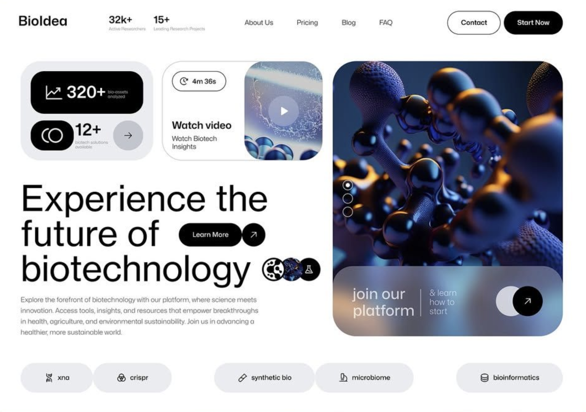
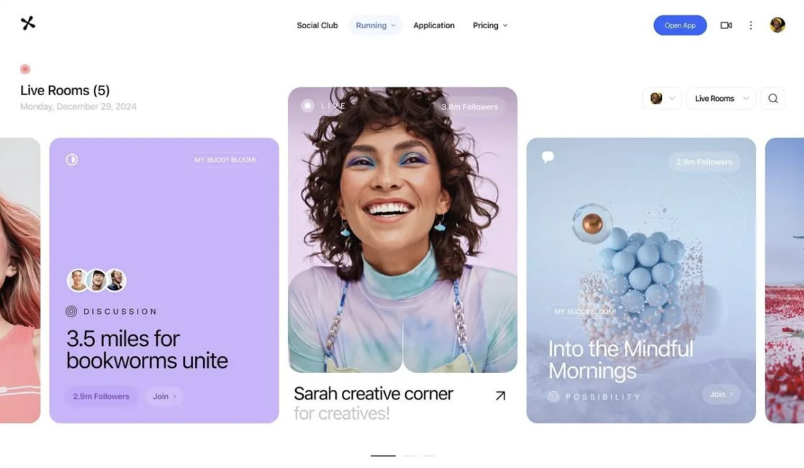

Правило 24 · референсы
Берём приёмы, не контент: воздух, светлый фон, точечный акцент и аккуратные интерфейсные элементы (pill-кнопки, иконочные кнопки в круге, карточки с крупным скруглением, метки-теги, контраст масштабов).

